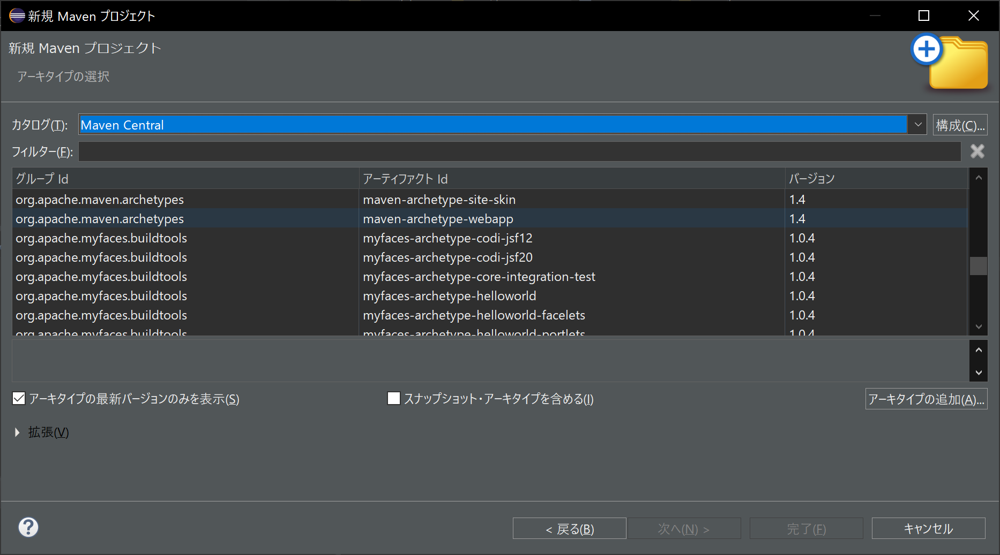
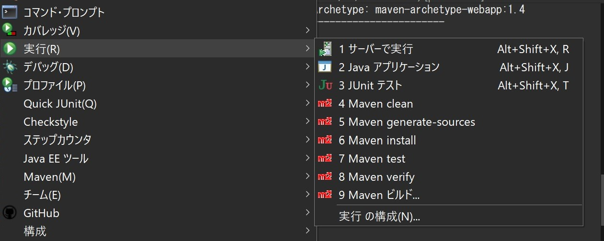

Mavenを使ったEclipseでの開発環境構築
Pythonの場合 > 開発環境_Win_Python
目次
<注意>
C:/(Apacheの保存先)/などと記述されてある場合は、各自の環境で入力すること。
1. Visual C++のダウンロード
Apacheで必要とのことなので、Visual C++再頒布可能パッケージをダウンロードします。
「Visual Studio 2015、2017、2019、および
2022」の下にある表の中のアーキテクチャがX64になっているURLをクリックし、ダウンロードします。
ダウンロードが終了し、ファイルを実行すると同意画面が出ます。同意してそのまま進めるとインストールが始まります。
2. Apacheのダウンロード、解凍、設定
WEBサーバとして利用するApacheは、Apache
Loungeからzipファイルでダウンロードします。
ページ内のApache 2.4.58 Win64のhttpd-2.4.58-win64-VS17.zipをクリックします。
以下の説明では2.4.57ですが、2.4.58でも問題なく動作します。
ダウンロードが完了したら、エクスプローラー を開きます。
を開きます。
たいていの場合、ダウンロードのフォルダに保存されているので、Apacheのフォルダを右クリックしてすべて展開します。
展開先を指定できると思います。OneDriveを避けながらアクセスしやすいフォルダ内にhttpdなどのフォルダを作成し展開します。
展開先にアクセスし、Apache24フォルダ内のconfフォルダ内にあるhttpd.confという設定ファイルをVSCodeやメモ帳などで開きます。
Ctrl + Hで検索窓を開くことができます。「SRVROOT」と入力し検索します。
右の画像のように、Define SRVROOT以降に展開したApacheの保存先を記述します。


さらに、「ServerName」と入力し、検索します。
www.example.comを、以下のようにlocalhost:80とし、保存します。
Listenの初期値が80になっていないかもしれません。その場合はそちらも編集します。

httpd.confはこのあとまた使用するので、閉じずに最小化しておきます。
起動でコマンド操作をしなくてもよくなるので、Windows サービスとして登録します。
タスクバーの検索窓にcmdと入力し、検索結果を右クリックするなどしてコマンドプロンプトを管理者として実行します。
C:\windows\system32> と表示されているので、続けてcd ../../(Apacheの保存先)/binと入力し、Enterします。
コピペできるならその方が早いです。
左の表示が変わるので、さらに続けてhttpd -k installと入力し、Enterします。

これでおそらくサービスとして登録されるはずなので、タスクバーの検索窓に「サービス」と入力し、サービスを開きます。
以下のようになっていて、Apache2.4が確認できればコマンドプロンプトは終了します。

Apache2.4の項目をダブルクリックすると、ウィンドウが開くので、「スタートアップの種類」を手動に変え、開始します。
おそらくファイアウォールの警告が出ると思うので、詳細を表示して、パブリックネットワークのチェックを外し、プライベートネットワークを選択します。

ここまでの手順が行えていれば、ブラウザでlocalhostにアクセスするとIt
works!と表示されています。
開始と同じウィンドウから、停止を選び、Apacheは一度停止させます。
また、このあと説明するTomcatとの連携に使う設定も記述しておきます。
必ず一度起動してから記述してください。Tomcatの設定が完了しないと503エラーが出ます。
httpd.conf末尾に以下の記述を行います。
ProxyPass / ajp://localhost:8009/
ProxyPassReverse / ajp://localhost:8009/
また、144行目あたりにある以下の記述から#だけを削除し、有効化します。
#LoadModule proxy_module modules/mod_proxy.so
#LoadModule proxy_ajp_module modules/mod_proxy_ajp.so
以下のようになります。


これでTomcatの通信を受け付けることができます。
3. Mavenプロジェクトの作成
本来ならTomcatと行きたいところですが、Eclipseの設定を覚えていない可能性も考慮してこちらから進めます。
Eclipseを起動します。起動の際、webアプリのファイルを入れるワークスペースのディレクトリを設定します。
これまで使っていたものと同じ場所でも構わないです。
起動したら、左上のファイル、新規の中からMavenプロジェクトを選びます。

以下のような画面が開くので、「次へ」を選択します。

「すべてのカタログ」か「Maven Central」からmaven-archetype-webappを選択し、「次へ」をクリックします。
org.apache.maven.archetypesなどと検索しても良いかと思います。
このとき、バージョンが1.4であるかどうか確認しておいてください。

グループidはcom.exampleのような形が好まれるようですが今回はlocalhostで良いかと思います。
アーティファクトidはプロジェクトのフォルダ名になります。お好みでいいですが、極力日本語は避けましょう。
バージョンは0.0.1-SNAPSHOTとなっているところを1.0-SNAPSHOTとしてください。
パッケージは自動で入力されると思います。
すべて記述できれば「完了」を選択してください。

コンソールが勝手に動きますが、一度だけ「y」と入力し、Enterする必要があります。

最終的に以下のように「BUILD SUCCESS」と出てフォルダが作成されます。

Mavenの設定も記述します。
以下のように、Mavenの設定ファイルであるpom.xmlをMaven POMエディターで編集します。
ダブルクリックで開けるような気もします。

開いたpom.xmlの以下の記述を書き換えます。
<url>http://www.example.com</url>
<properties>
<project.build.sourceEncoding>UTF-8</project.build.sourceEncoding>
<maven.compiler.source>1.7</maven.compiler.source>
<maven.compiler.target>1.7</maven.compiler.target>
</properties>
urlをlocalhost、maven.compiler.~~を17とします。
<url>http://localhost</url>
<properties>
<project.build.sourceEncoding>UTF-8</project.build.sourceEncoding>
<maven.compiler.source>17</maven.compiler.source>
<maven.compiler.target>17</maven.compiler.target>
</properties>
JREシステム・ライブラリーのバージョンが変わらない場合
JREシステム・ライブラリーを右クリックしてプロパティーから選択するか、pom.xmlの<build>内<pluginManagement>の中からmaven-compiler-pluginを探し、
<version>のすぐ下に以下のように追記します。
<configuration>
<source>17</source>
<target>17</target>
</configuration>
クラスパス・エントリー ~~ は、エクスポートまたは公開されません。
Eclipseの場合、マーカーとして警告が表示されると思います。このような警告が出ている場合、警告の文字を右クリックし、クイックフィックスから
関連するrawクラスパスエントリを除外してください。
警告の対処が終われば、プロジェクトを右クリックして実行からMaven installを行います。

コンソールの動きが止まったら同様にサーバーで実行します。
Tomcat10_Java17でいいと思います。下の常に使用するかは各自の判断とします。
特に何もなければそのまま完了を押せば起動します。
4. Tomcatの設定
Eclipseに初期から入っているTomcatの設定は、Serversフォルダ内で編集する必要があります。
ワークスペースのディレクトリがわかるならそのままエクスプローラーから開いてください。
わからない場合は、プロジェクトを右クリックし、一番下にあるプロパティのリソースを開きます。
ロケーションと書かれている場所にアイコンがあるのでそこをクリックするとワークスペースが開きます。
その中の「Servers」を開き、先ほど選んだTomcatとJavaのバージョンが同じ組み合わせのconfigを開きます。
xmlなどが並んでいるので、server.xmlをテキストエディタなどで開きます。
Eclipse, VSCode, メモ帳など編集できれば良いです。
102行目あたりにある以下のコードのうち、一番上の行はそのままでいいので、その下から書き換えます。
<!-- Define an AJP 1.3 Connector on port 8009 -->
<!--
<Connector protocol="AJP/1.3"
address="::1"
port="8009"
redirectPort="8443"
maxParameterCount="1000"
/>
-->
<!-- -->内はコメント化されていて実行されません。
以下のように書き換えます。
<!-- Define an AJP 1.3 Connector on port 8009 -->
<Connector protocol="AJP/1.3"
address="0.0.0.0"
port="8009"
redirectPort="8443"
maxParameterCount="1000"
secretRequired="false"
/>
本来はtomcat-users.xmlの編集もした方がよいと思いますが、しなくてもとりあえず動くので、後回しとします。
書き換えが正しく行われているか確認するため、Tomcatの再起動を行います。
EclipseにTomcatが並んでいるところがあると思います。
無ければ、上のウィンドウ > ビューの表示からサーバーを選択してください。
停止していた場合は起動、起動しているなら再起動のアイコンをクリックすると起動されます。
ここでサービスからApacheを起動します。
このままlocalhostにアクセスすると404が青っぽい画面で出ていると思います。
503は設定の問題だと思います。とりあえずサーバーを再起動して無理なら設定を見直してください。
ここで、localhost/アーティファクトidのように記述します。自分の場合はseminarとしたので、localhost/seminarです。
Hello World!と表示されていれば上手くいっています。
src > main > webapp のindex.jspが表示されています。
5. MySQLのインストール
今回、データベースを操作するSQLにはMySQLを使用します。
MySQLのページからダウンロードします。
これも8.2.0にされていました。一応Archivesに8.1.0があります。8.2.0のCommand Line
Clientは起動しにくいらしいです。
Windows (x86, 64-bit), MSI InstallerをDownloadします。
Windowsじゃないときは、Select Operating System:から選択してください。
No thanks, just start my download.を選択するとダウンロードが始まります。
ダウンロードしたインストーラを開き、Next > I accept ~にチェック、Next > Typical、Next > Installで進みます。
8.2.0で試したので8.1.0では異なるかもしれません。
一通り終われば、MySQL configuratorを開いて、Windows Serviceにチェックを入れてください。
始めから入っているかと思います。
おそらく設定するのはパスワードぐらいだと思います。
6. テスト用DBの作成
DBを作成します。MySQL Command Line Clientを開き、パスワードを入力します。
MySQL Command Line Clientが開かないとき
「環境変数を編集」という名前で出てくるアプリの「Path」をクリックし、編集 > 新規で C:\Program Files\MySQL\MySQL Server (バージョン)\bin
を追加してください。バージョンには8.2などと入力すればいいです。
その後、OKを押してウィンドウを全て消し、コマンドプロンプトで mysql -u root -pと入力してください。
長い説明の後、mysql>と表示されるので、CREATE DATABASE test;と入力します。
;を入れないと一生聞いてきます。
SHOW Databases;と入力すると、今作ったtestがあるはずです。
USE test;と入力し、
CREATE TABLE members (id INT AUTO_INCREMENT, name TEXT, PRIMARY KEY (id)) DEFAULT CHARSET=utf8;
と入力し、さらに以下の3つのコマンドを実行します。
SELECT * FROM members;
空のテーブルなので中身入ってないはず。しなくてもよい
INSERT INTO members(name) VALUES ('高井才明');
SELECT * FROM members;と入力すると、テーブルが確認できます。
SQLでユーザを作ることを推奨します。ROOTユーザを常用するのは好ましくないです。
7. サーブレット
Mavenは依存関係として様々なパッケージを追加しやすいことが利点です。
pom.xmlの<dependencies>に以下の記述を追加します。
ただし、mysqlの<version>にはダウンロードしたものと同じ値を入力してください。
追記:jakartaの方が良いかと思われるので、スクリーンショットとは変わりますが記述を追加してください。
<dependency>
<groupId>javax.servlet</groupId>
<artifactId>jstl</artifactId>
<version>1.2</version>
</dependency>
<dependency>
<groupId>com.mysql</groupId>
<artifactId>mysql-connector-j</artifactId>
<version>8.1.0</version>
</dependency>
<dependency>
<groupId>jakarta.servlet</groupId>
<artifactId>jakarta.servlet-api</artifactId>
<version>6.0.0</version>
</dependency>


一応ディレクトリにも作法があるみたいなので倣っておきます。
src > main内にjavaフォルダを作成し、さらにlocalhostフォルダも作成しておきます。
localhostの方はあってもなくても結果は同じです。
作成したフォルダ内にjavaファイルを作成します。とりあえずTest.javaとしておきましょう。

Test.javaは以下のような記述をします。packageはフォルダを作らなかった場合は記述不要です。
パスワードの部分は書き換えてください。
package localhost;
import java.io.IOException;
import java.io.PrintWriter;
import java.sql.Connection;
import java.sql.DriverManager;
import java.sql.ResultSet;
import java.sql.SQLException;
import java.sql.Statement;
import jakarta.servlet.ServletException;
import jakarta.servlet.http.HttpServlet;
import jakarta.servlet.http.HttpServletRequest;
import jakarta.servlet.http.HttpServletResponse;
public class Test extends HttpServlet
{
protected void doGet(HttpServletRequest request, HttpServletResponse response)
throws ServletException, IOException
{
Connection conn = null;
response.setContentType("text/html; charset=Windows-31J");
PrintWriter out = response.getWriter();
out.println("<html><head></head><body>");
out.println("<table border='true'>");
out.println("<tr><th>氏名</th></tr>");
try {
Class.forName("com.mysql.jdbc.Driver"); // JDBC ドライバのロード
String url = "jdbc:mysql://localhost/test"; // 接続先URL
String user = "root"; //ユーザ名
String password = ""; // パスワード
conn = DriverManager.getConnection(url, user, password); // 接続の確立
Statement stmt = conn.createStatement();
ResultSet rs = stmt.executeQuery("SELECT * FROM members"); // SQL文の実行
while (rs.next()) { // SQL実行結果の取り出し
out.print("<tr>");
out.print("<td>"+rs.getString("name") + "</td>");
out.print("</tr>");
}
}
catch (ClassNotFoundException e) {
out.println("クラスが見つかりません。");
}
catch (SQLException e) {
out.println("データベース操作中にエラーがありました。");
e.printStackTrace();
}
finally {
try {
if (conn != null)
conn.close(); // 接続の切断
}
catch (SQLException e) {}
}
out.println("</table>");
out.println("</body></html>");
out.close();
}
}
また、src > main > webapp > WEB-INFのweb.xmlを「テキストエディタ」で編集します。
Eclipseのxmlエディタの使い方わからないので、右クリックして「次で開く」を選択してください。
<display-name>~~</display-name>のあとに
<servlet>
<servlet-name>Test</servlet-name>
<servlet-class>localhost.Test</servlet-class>
</servlet>
<servlet-mapping>
<servlet-name>Test</servlet-name>
<url-pattern>/Test</url-pattern>
</servlet-mapping>
と記述します。servlet-nameやservlet-classは適宜変更してください。
url-patternも変更可能だと思います。
ここまで来たら、一度「Maven install」を行い、サーバーを起動してアクセスしてみてください。
同じように作っているならlocalhost:8080/seminar/Testで開きます。
8. 参考
Apacheのダウンロード (https://www.javadrive.jp/apache/install/index1.html)
Mavenの使い方など (https://qiita.com/taumax/items/28d5d7a97bf4c34a66f4)
Maven (https://qiita.com/tarosa0001/items/e5667cfa857529900216)
Maven標準ディレクトリ (https://javait.hatenablog.com/entry/2015/08/31/105237)
Eclipse - Maven (https://reasonable-code.com/eclipse-maven/)
JREシステム・ライブラリー (https://qiita.com/zaki-lknr/items/8137ac40ebd8f5bdb3c5)
JAVA_HOME (https://eng-entrance.com/java-install-env)
AJP (https://qiita.com/YuichiTanaka007/items/13d89195b66891ec2081)
Eclipse - Tomcat (https://searchman.info/java_eclipse/1090.html)
MySQLのダウンロード (https://www.javadrive.jp/mysql/install/index1.html)
MySQLのインストール (https://www.javadrive.jp/mysql/install/index2.html)
MySQLでのDB作成 (https://prog-8.com/docs/mysql-database-setup)